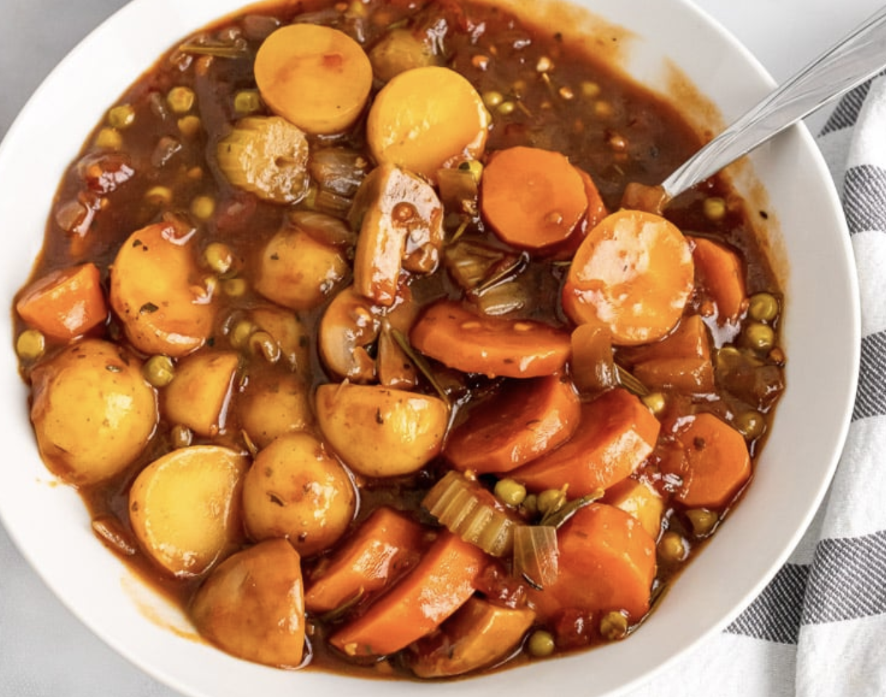

Stew Recipe

Heart Vegan Stew:
This recipe will show you how to make a hearty vegan stew to enjoy during the winter months.
Ingredients:
- 2 tbsp olive oil
- 1 onion minced
- 2 cloves garlic minced
- 3 large carrots sliced
- 2 stalks celery sliced
- 2 cups baby potatoes halved
- 1 cup white mushrooms sliced & quartered
- 1 cup frozen peas
- 1 tsp Italian seasoning
- 2 cups vegetable broth
- 19 oz diced tomatoes canned with garlic
- 3 tbsp soy sauce
- 1 tbsp balsamic vinegar
- 2 sprigs rosemary
- small bunch fresh thyme
- 2 tbsp cornstarch
- 3 tbsp water
Steps:
- In a large pot, heat olive oil, then add onion and garlic; sauté 3 to 4 minutes or until onion is translucent.
- Add the carrots, celery, baby potatoes, mushrooms, and peas into the pot.
- Cook for 2 to 3 minutes.
- Add the Italian seasoning, vegetable broth, diced tomatoes, soy sauce, balsamic vinegar, rosemary, and thyme. Stir and bring to a boil.
- In a small bowl, whisk together the cornstarch and water to form a slurry mix. Add to the stew and stir.
- Turn heat down, cover pot, and simmer for 45 minutes or until veggies are tender.
- Serve.